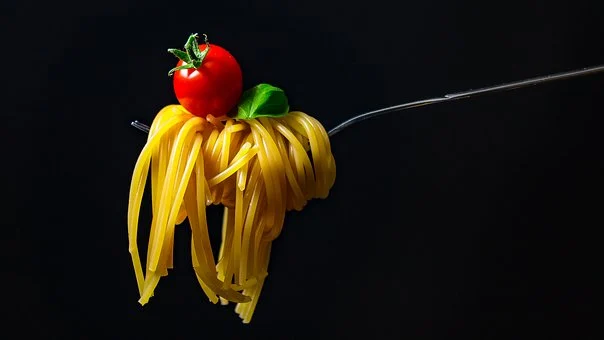

Making my favorite roll, the spicy tuna roll, is so simple that pretty much anyone can do it!
The
only ingredients necessary are Japanese grain rice, sushi vinegar, seaweed, tuna, and sriracha
sauce! In order to prepare the rice, most rice cookers will have options pre-set in order to
cook it
to perfection. You may cook it on a stove as well, but make sure to look up a video that
properly
explains it and walks you through it. Also, make sure to soak the rice for 30 minutes beforehand
to
ensure it cooks properly and remains soft and fluffy, yet sticky at the same time.
If the rice is sticking to your hands, make sure to keep dipping them in the vinegar. The
vinegar
should be an even mix of rice vinegar and water. Another neat thing about using the vinegar is
it
will eliminate the odor and bacteria from any previously handled fish!
Finally, make sure to roll your sushi grade tuna nice and tightly in between the rice and
seaweed.
Optionally, you can mash up the tuna and mix it with the sriracha to make the spicy tuna roll
similar to how many restaurants do. Oishi sushi does it this way, which is my preferred style of
spicy tuna. Alternatively, you can simply roll a normal tuna roll, and then coat the top of the
roll
with a drizzle of sriracha sauce.
If your roll is nice and tight and the tuna has a kick of spice to it, congratulations, you just
made your first spicy tuna roll! Enjoy!!
Chicken Saltimbocca Recipe

Ingrediants
Sliced Chicken Breast
Prosciutto
Sliced fontina cheese
White wine
Rosemary
Olive oil
Salt and Pepper
Anyone can cook this dish. Simply start by grilling some chicken in a pan. Make sure to
lightly
season it prior to grilling.
Then, throw some prosciutto on top of the chicken. Allow the prosciutto to cook slightly,
but not
fully. We do not want it completely “raw,” but we also do not want it fried to death.
Then add a slice(or two) of cheese on top of the prosciutto. Give yourself enough time to
allow the
cheese to melt without letting the chicken become burnt.
Whilst doing all of this, make sure to saute some spinach in a separate pan.